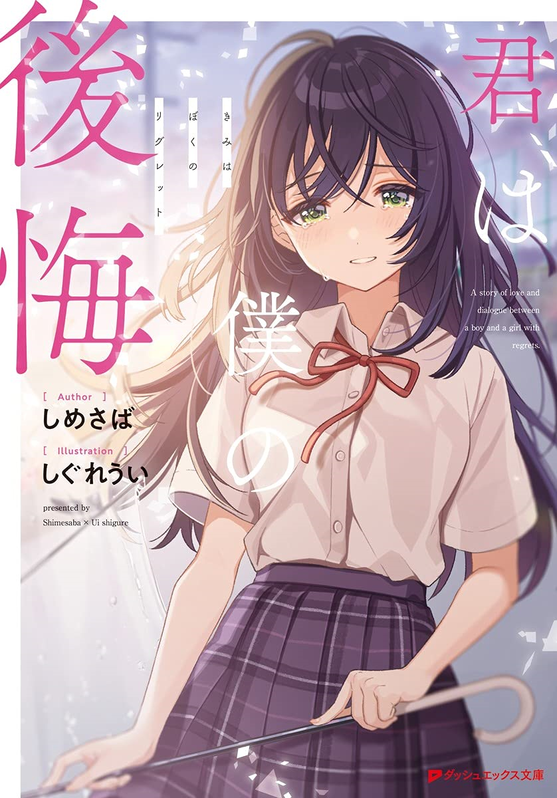

Kimi wa Boku no Koukai
Novel Info's
Status: Ongoing
Genre: Drama, Romance, Slice of Life
Author: Shimesaba
Illustrator: Shigure Ui
Volumes: 3
Original Publisher: Shueisha
English Publisher:
Fan Translation: Turu Translation
Description/Sypnosis
Asada Yuzuru’s regrets. It was Mizuno Ai, the sweetheart in middle school. I like Ai. But she suffers from her freedom. A romance in the past high school. The love between the two gradually became a thing of the past and should become a memory. However, in the summer of his first year of middle school, Ai reappears in front of Yuzuru.
“I like Yuzuru.”
……With the same help as before. You can’t convey it unless you put it into words. But I can’t understand it from words alone. The two opposites collided and passed each other… What was the answer that was finally found? A love story and dialogue between a boy and a girl who have regrets.
Download Links
Epub & Pdf